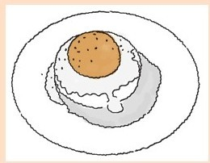

准备食物是富有乐趣的。数学之美也是这样的。
好玩的数学家
读者们可能会觉得这本书里的数学很好玩：智力谜题、游戏、涂鸦和纸牌魔术。这可能反映出我的一个偏好。就像任何审美，可以与一部分同好者分享，但不是所有人都认同。
数学的好玩之处有一个生动可爱的例证——一个由班克罗夫特·布朗发现、证明的定理[41]。
定理：每个月的13号是星期五的频率高于其他几天。
一个奇怪的陈述！你会想一周有七天，13号那天可以是一周中的任何一天！
这个陈述也很好玩。这和多面体、第四个维度、广义相对论或者无穷级数无关。这个陈述的无意义性也是其魅力的一部分。
这个陈述也是有用的，假如你碰巧是个迷信的人。
最后，对它的证明也是可爱的，可爱得有点疯狂。证明如下：
证明：一年的天数遵循以下规则，但有所不同：
1.一年有365天，除了——
2.每4年会有一年有366天（闰年），除了——
3.每个第100年有365天，除了——
4.每个第400年有366天。
【例如：1885年、1886年、1887年，每一年都有365天（规则1），但是1888年、1892年和1896年是闰年（规则2），但1900年不是闰年（规则3）；而2000年是一个闰年（规则4）】。
我们从这些历法规则中可以看到任何一个400年周期中，天数都有一个定数。我们能用以下4条规则计算400年内的天数：
1.365 天乘以400年等于146，000天。
2.146，000天加上100个闰年日等于146，100天。
3.146，100减去4个闰年日等于146，096天。
4.146，096天加上1个闰年日等于146，097天。
令人惊奇的是，这个数字能被7整除：
146，097=7×20，871
意思是，举例来说，既然2003年4月3日那天是星期四，那么1603年4月3日也是星期四，而2403年4月3日也会是星期四。这也就是说从1600年到1999年，星期一那天是13号的次数与2000年到2399年这段时间内星期一那天是13号的次数是一样的，同样和2400年到2799年这段时间内星期一那天是13号的次数也是一样的，以此类推。
因此，要证明13号那天是星期五的频率高于其他任何一天，我们要做的仅仅是证明从1600年到1999年这段期间（或者其他任何一个400年周期）确实是这样。
这是这个证明的可爱之处。这个证明的疯狂之处在于布朗居然用了数小时（数天）计算1600年到1999年间13号是星期一、13号是星期二、13号是星期三……的天数。那时计算机还没被用于此类工作。等他计算完成，他发现在其指定的400年间，13号那天是星期五的频率要比其他任何一天都高。因此，在任意400年间，13号那天是星期五的频率高于其他任意一天！
好玩的厨师
食物能带来快乐当然很好。你吃过嘴里含着自己尾巴的鱼吗？你吃过里面藏有奖品的蛋糕吗？幸运福饼吃过吗？
几年前，我想烤一种我自己的Hostess牌奶油纸杯蛋糕。我成功了，这过程很好玩。据我所知其他人也这么做过。所以，我就不提供制作方法了，说一些（我认为）别人没有想到的吧。
多年来，我一直认为芒果和腰果是很好、很搭的一对儿。我用腰果做的面包皮做出了芒果蛋挞，味道不错。但是我一会要向你展示的这个甜品要更好。做这个甜品的想法是我在考虑舀一勺芒果需要多少才会让它看起来像一个蛋黄时出现的。这使我想到一种很像，但不是班尼迪克蛋的甜品。
这道餐点包含一种坚果调和蛋白（看上去就像英式松饼一样）、一种意式奶油布丁（看起来像蛋白）、芒果（看上去像蛋黄）、奶油酱（就像荷兰辣酱油），最上边点缀了一些罂粟籽（看起来像胡椒粉）。
班尼迪克蛋升级品

意式奶油布丁的做法
1包无味吉利丁粉
3汤匙冷水
1¼杯多脂奶油
1¼杯牛奶
杯糖
1个香草豆荚或者½茶匙香草精
6个4～6盎司的奶油杯，轻涂一层油。
将吉利丁粉洒在水上，静置5分钟。
在炖锅中放入奶油、牛奶和糖。如果用的是香草豆荚，需将其纵向劈开，拿出香草豆放到炖锅中。所有食材煮至沸腾，然后关火。
如果有香草豆荚，就去皮使用，如果没有，就加入香草精。
加入吉利丁粉，搅拌至溶解。稍微冷却后，在其变浓稠时开始搅拌。将混合物倒入奶油杯。用保鲜薄膜将意式奶油布丁密封住，塑料要盖在奶油冻的表面上，不使其透气。
饼干的做法
3个蛋白
杯糖
½杯+1汤匙未经加工的无盐腰果，用咖啡研磨机磨细。
1个大金枪鱼罐头盒，清洗干净，去掉盖和底。
用涂了黄油的锡箔纸将烤盘覆盖。蛋白打发起泡。打发过程中每次放入1～2茶匙糖。拌入腰果粉。用金枪鱼罐头盒塑形，每次一个，一共可以在涂了黄油的锡箔纸上做出6个饼干。
烤箱以120摄氏度将饼干烤至金黄。这大概需要1个多小时，也许不到一个小时。每10分钟左右查看一次。
让饼干冷却，然后轻轻地剥掉锡箔纸。
奶油酱的做法
3个蛋黄
½杯糖
¾杯热牛奶
½茶匙玉米淀粉
½茶匙香草
加糖打发蛋黄，打入玉米淀粉，打发过程中慢慢加入热牛奶，拌入香草，隔热水加热，打浆，直至变厚（浓稠）。
组合成品：
3个阿道夫芒果（也叫香槟芒果）
罂粟籽
将饼干放在盘中。用刀沿边缘使奶油杯中意式奶油布丁松动，小心地将奶油杯倒扣，用刀将奶油布丁移出。要将这些布丁放在饼干上。每个芒果切两下，一刀切在扁平的果核上方，另一刀切至果核的下方，这样，一共会有6瓣无核芒果，从每一瓣中用勺舀出圆形芒果肉，放在奶油布丁上，平的那一面朝下。淋上一勺奶油酱，撒上少许罂粟籽。
这道甜点很受人喜爱，不难看出它与班尼迪克蛋的相似之处。有一次我在家宴客。在拿出这个甜品之前，我告诉我的客人们，这不是班尼迪克蛋。当盘子摆在他们面前时，他们原本飞扬的笑脸垮了下来，因为我已经告诉他们不是班尼迪克蛋，但是班尼迪克蛋是什么样子已经印在他们的脑海中。他们刚刚吃完一顿大餐，不想再吃一个班尼迪克蛋了。太糟糕了，这个甜品热量好大，就像类固醇上还有班尼迪克蛋。
当然，他们终究还是非常喜欢这道甜品，不管外观怎么样，它是很清淡爽口的。
能体会到这其中的乐趣是很好的，这是我想在此表达的。大部分人都能明白。